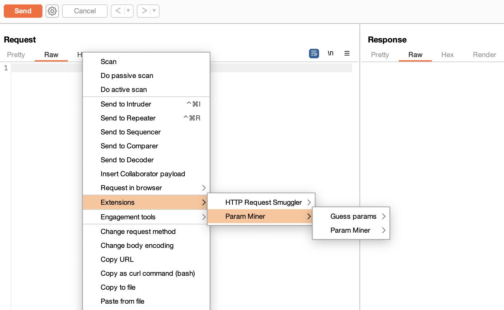
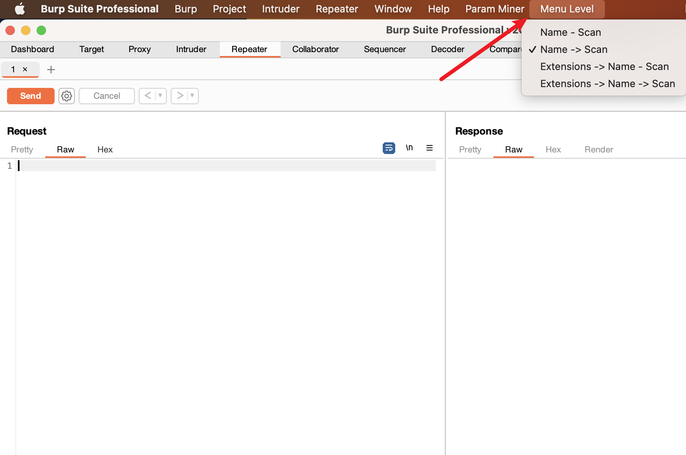
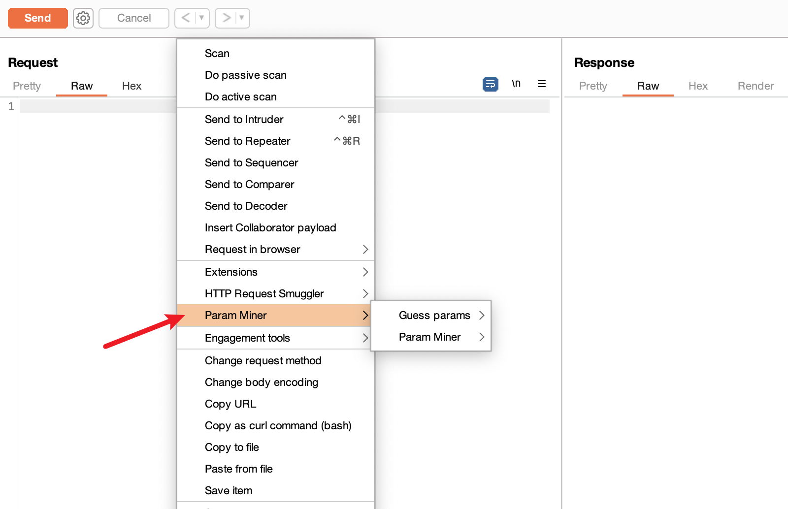

BurpSuite新版本中，插件注册的右键菜单在 Extensions -> 插件名 -> 插件菜单 ，点起来比较麻烦。测了几个BurpSuite版本，这个更改在下面几个版本改的：
- v2021.7： 第三层。右键 - Extensions -> 插件名 -> 插件菜单
- v2021.4、v2021.5、v2021.6： 第二层。右键 - Extensions - 插件菜单
- v2021.3： 第一层。右键 - 插件菜单
写了个小插件 BurpMenuLevel ，用来修改右键插件菜单层级的。这个插件适用于v2021.7及之后的版本。
实现
如果插件要添加右键菜单，需要实现IContextMenuFactory接口的public List<JMenuItem> createMenuItems(IContextMenuInvocation invocation)方法，并调用callbacks.registerContextMenuFactor方法来注册。
每次在Repeater界面或其它地方上右键，Burp就会调用createMenuItems方法来获取菜单列表，然后添加到插件名的子菜单里，再将插件名菜单加到Extensions的子菜单里。
想了一种实现方式：监听自己插件菜单的父组件更改事件（HierarchyEvent事件），就可以获取其父组件插件名菜单，同理，再监听插件名菜单，获取Extensions菜单，再监听Extensions菜单，获取第一层的整个右键菜单，获取到这个之后，整个菜单就可以随意修改。
三层事件监听：
1
2
3
4
5
6
7
8
9
10
11
12
13
14
15
16
17
18
19
20
21
22
23
24
25
26
27
28
29
30
31
32
33
34
35
36
37
38
39
40
41
42
43
44
45
46
47
48
49
50
51
52
53
54
55
56
57
58
59
60
61
62
63
64
65
66
67
68
69
70
71
72
73
74
75
76
| private void changeContextMenuLevel(List<JMenuItem> myMenus, int level) {
if (myMenus.size() == 0) {
return;
}
JMenuItem flagMenu = myMenus.get(0);
flagMenu.addHierarchyListener(new HierarchyListener() {
private boolean ran = false;
@Override
public void hierarchyChanged(HierarchyEvent e) {
if ((e.getChangeFlags() & HierarchyEvent.PARENT_CHANGED) != 0) {
if (!ran) {
ran = true;
if (flagMenu.getParent() == null || !(flagMenu.getParent() instanceof JPopupMenu)) {
return;
}
JPopupMenu popupMenu = (JPopupMenu) flagMenu.getParent();
Component invoker = popupMenu.getInvoker();
if (!(invoker instanceof JMenuItem) || !((JMenuItem) invoker).getText().equals(extensionName)) {
return;
}
JMenuItem extensionNameMenuItem = (JMenuItem)invoker;
extensionNameMenuItem.addHierarchyListener(new HierarchyListener() {
private boolean ran2 = false;
@Override
public void hierarchyChanged(HierarchyEvent e) {
if ((e.getChangeFlags() & HierarchyEvent.PARENT_CHANGED) != 0) {
if (!ran2) {
ran2 = true;
if (extensionNameMenuItem.getParent() == null || !(extensionNameMenuItem.getParent() instanceof JPopupMenu)) {
return;
}
JPopupMenu extensionsPopupMenu = (JPopupMenu) extensionNameMenuItem.getParent();
Component invoker2 = extensionsPopupMenu.getInvoker();
if (!(invoker2 instanceof JMenuItem) || !((JMenuItem) invoker2).getText().equals("Extensions")) {
return;
}
JMenuItem extensionsMenuItem = (JMenuItem) invoker2;
extensionsMenuItem.addHierarchyListener(new HierarchyListener() {
private boolean ran3 = false;
@Override
public void hierarchyChanged(HierarchyEvent e) {
if ((e.getChangeFlags() & HierarchyEvent.PARENT_CHANGED) != 0) {
if (!ran3) {
ran3 = true;
if (extensionsMenuItem.getParent() == null || !(extensionsMenuItem.getParent() instanceof JPopupMenu)) {
return;
}
extensionsPopupMenu.remove(extensionNameMenuItem);
JPopupMenu topLevelPopupMenu = (JPopupMenu) extensionsMenuItem.getParent();
}
}
}
});
}
}
}
});
}
}
}
});
}
|
另一种可能可行的方式是，注册一个AWTEventListener监听整个GUI的事件是获取右键菜单对象。这种方式我没去试。
插件截图
默认的菜单层级：

设置下：

修改后的效果：
